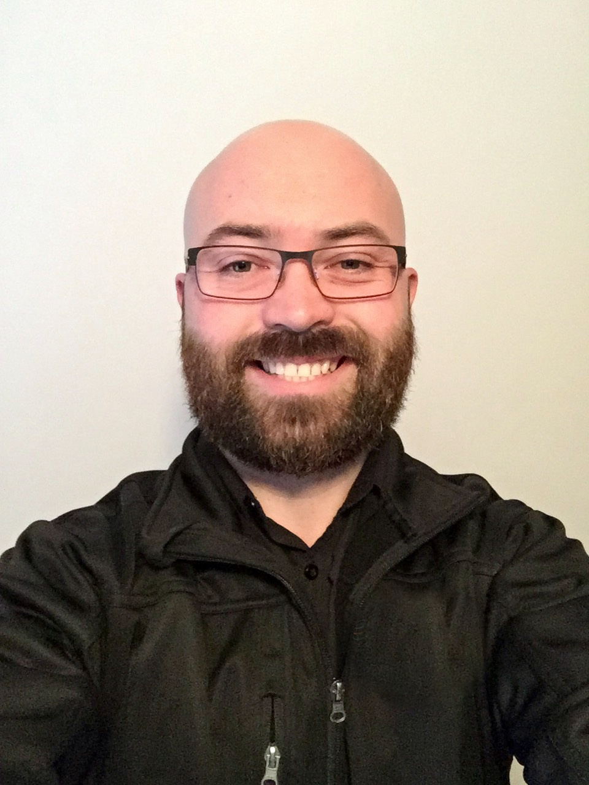
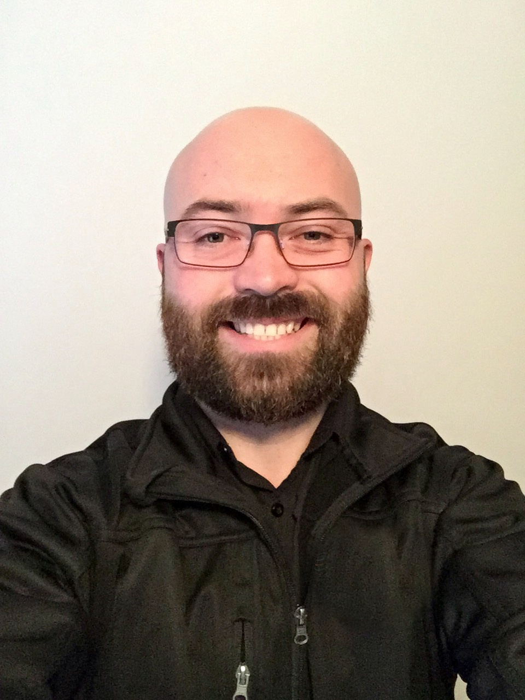

Personal Information
 

Student ID S391092
S3910923@student.rmit.edu.au
https://peteraird.github.io/Assessment1/
https://github.com/peteraird
Nationality: Australian, Caucasian, Scottish ancestry.
Language Spoken: English.
Education: year 12,
Certificate 3 & 4 in retail.
Corporate training courses, in a variety of subjects, people management, dealing with conflict, time management, HR management, sales training
Disability support courses, including first aid, healthy bodies, and the administration of medication.
Hi, Pete, here from Tassie.
I have a beautiful partner, Keryn and a 6year old son, Flynn, a cat named Spot and a Chocolate Lab Called Coco, and I'm very much a sci-fi junkie.
I work full-time Monday to Friday as a Territory Manager for The Arnott's Group.
I also work part-time for Tassiecare in Disability Support as a Direct Service Coordinator and Tech Support.
For my Arnott's job, I'm managed out of NSW. I do a lot of zoom meetings, work with Microsoft Office and Salesforce. I have a small team of three Representatives working under me, right across the north of the state. I'm a part of the field tech team and have already helped roll out different tech projects across Australia and New Zealand.